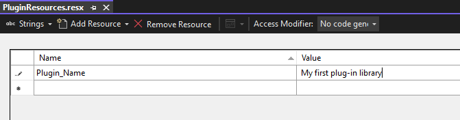

Building a plug-in
This section focuses on how to create a new third-party plug-in for Trados Studio using one of the standard Visual Studio project templates and offers some information on how this works under the hood.
Building a Plug-in
Since Trados Studio is a Microsoft .NET Framework application, third-party plug-ins should be developed using Microsoft .Net Framework 4.8. The Trados Studio SDK comes with a number of Visual Studio project templates, which give you a quick start to creating various types of plug-ins.
In this topic, we will be creating a Translation Provider plug-in as an example. We will only focus on aspects common to all types of plug-ins.
First of all, make sure that you have followed the Setting up a Developer Machine information.
Start Visual Studio and click New Project. Select one of the Trados Studio project templates that are available. If you don't see any Trados Studio project templates, make sure you have installed the latest Trados Studio SDK version from the developer hub.

The project templates already contains stubs for all the classes you will have to implement to create a new plugin.
First, open PluginProperties.cs, which is located next to the AssemblyInfo.cs file in the Properties folder. This contains a single Plugin attribute, which is what fundamentally makes this project a plug-in project. "Plugin_Name" is a resource string defined in PluginResources.resx.
[assembly: Sdl.Core.PluginFramework.Plugin("Plugin_Name")]
Open the PluginResources.resx file. You'll see that this contains a string value called Plugin_Name.

This defines the name of the plug-in assembly and will be preset to the name of the Visual Studio project. This is the name that will show up in the Trados Studio plug-in management dialog. Any localizable strings referred to from the plug-in attribute or extension attributes should be defined in PluginResources.resx. This ".resx" file will be compiled into a ".resources" file and will be deployed outside of the plug-in assembly itself, so the host application can access the information within it without having to load the plug-in assembly itself.
Every third-party plug-in has to be deployed using a Plug-in Package (*.sdlplugin). This is an OPC-based file format, essentially a ZIP file, that contains the plug-in assembly, plug-in manifest file and the plug-in resources file. All Visual Studio project templates that come with the Trados Studio SDK are configured to automatically create a plug-in package when the project is built. One essential piece of information required in order to do this is the plug-in package manifest, which is defined in the file pluginpackage.manifest.xml that was part of the project template.
<?xml version="1.0" encoding="utf-8"?>
<PluginPackage xmlns="http://www.sdl.com/Plugins/PluginPackage/1.0">
<PlugInName>TradosStudioTranslationProviderExample</PlugInName>
<Version>1.0.0.0</Version>
<Description>Plugin description</Description>
<Author>Name of the author</Author>
<Include>
<File>ThirdPartyLibrary.dll</File>
</Include>
<RequiredProduct name="TradosStudio" minversion="17.0" maxversion="17.9" />
</PluginPackage>
The plug-in package manifest defines some pieces of essential information:
- PlugInName: the friendly name of the plugin. This can be different to the name of the plug-in defined in
PluginResources.resx, because a plug-in package can in theory contain multiple plug-ins. - Version: the version of the plug-in package. This is important, as it will be used to detect updated packages. For more information, see Plug-in deployment.
- Description: description of the plug-in package.
- Author: the name of the plug-in author
- RequiredProduct: this indicates which product this plug-in supports. This must include the minimum version and can optionally include a maximum version.
If the minimum version is set to 17.1 that means the plugin can be installed only in Trados Studio SR1 and above. - Include: a list of additional files to be included into the plugin package.
Any plugin project need to have the following nuget packages refrenced :
- Sdl.Core.PluginFramework: this package provides the API's for the extension points
- Sdl.Core.PluginFramework.Build: this package provides the plug-in manifest creation build step, which uses the standard MSBuild extension mechanism. See Plug-in manifest generator.
Note
Sdl.Core.PluginFramework.Build is needed only in build time.
Now build the project and have a look in the project output folder. Notice the following:
- The plug-in assembly,
MyPlugin.dll - A "Plugins" folder, which contains:
- The plug-in manifest,
MyPlugin.plugin.xml, which lists information about all the extension classes. the plug-in contains. - The neutral plug-in resources file
MyPlugin.plugin.resources, which contains all the localizable strings and images referred to within the plug-in manifest. This was compiled fromPluginResources.resx.
- The plug-in manifest,
- The plug-in package,
MyPlugin.sdlpluginwhich contains all of the above, together with the plug-in package manifest.
After all the relevant information was added, build the project. Plugin can be found at the following local path %AppData%\Trados\Trados Studio\17\Plugins\Packages\ if the default path wasn't changed.
If in the console following error appears: Error 1 Failed to locate ResGen.exe and unable to compile plug-in resource file... please make sure you have installed .Net Framework 4.8.
Now, we are ready to deploy the plug-in package in Trados Studio. See Plug-in deployment.